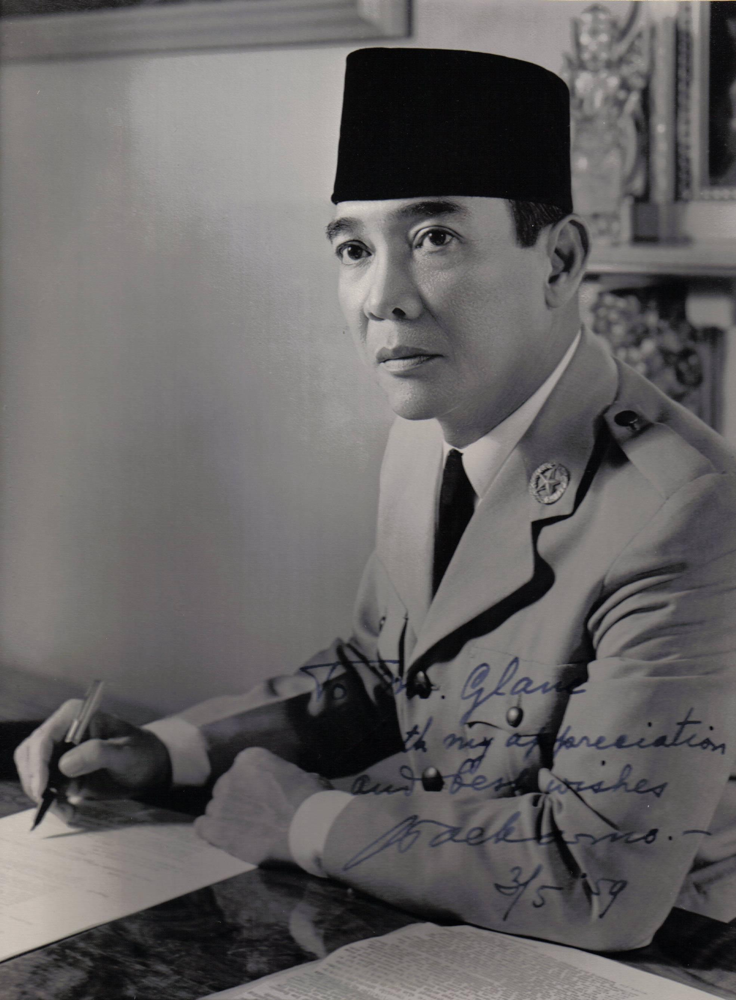

Ir. Seokarno
Soekarno, yang lahir di Surabaya pada 6 Juni 1901, adalah salah satu tokoh paling berpengaruh dalam sejarah pergerakan nasional Indonesia. Meskipun tidak terlibat langsung dalam penyusunan ikrar Sumpah Pemuda, Soekarno memiliki peran besar sebagai sumber inspirasi bagi para pemuda melalui gagasan nasionalismenya yang kuat. Ia aktif dalam berbagai organisasi seperti Budi Utomo, Jong Java, dan kemudian mendirikan Partai Nasional Indonesia (PNI) yang menjadi wadah perjuangan menuju kemerdekaan. Dikenal sebagai Proklamator sekaligus Presiden pertama Republik Indonesia, Soekarno memberikan kontribusi besar dalam mempersatukan bangsa dengan semangat satu tanah air, satu bangsa, dan satu bahasa. Selain sebagai pemimpin politik, ia juga seorang orator ulung yang mampu membangkitkan semangat rakyat lewat pidatonya, serta seorang arsitek yang merancang berbagai bangunan bersejarah seperti Monas. Rakyat Indonesia mengenangnya dengan sebutan “Bung Karno,” sosok yang karismatik dan penuh dedikasi bagi kemerdekaan bangsa.